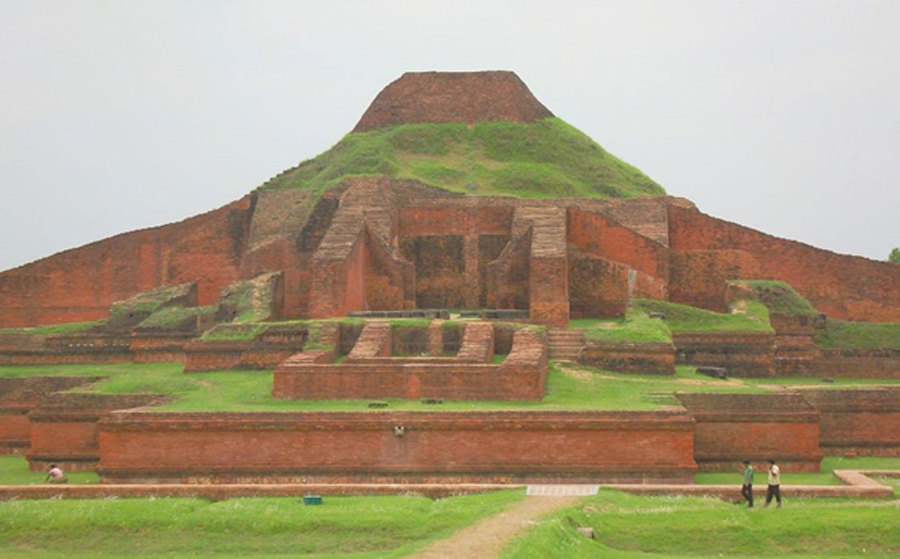

Best Historical Places in Bangladesh
Sompura Mahavihara
Sompura Mahavihara is among the best known Buddhist viharas in the Indian Subcontinent and is one of the most important archaeological sites in the country. It was designated as a UNESCO World Heritage Site in 1985. It dates from a similar time period to the nearby Halud Vihara and to the Sitakot Vihara in Nawabganj Upazila of Dinajpur District.
Lalbagh Fort in Dhaka

Dhaka's one of the most popular historical site is Lalbagh fort. However, this 16th century brick-built Mughal fort, established to protect Dhakaites from the invasion of Portuguese and Arakanese pirates, possesses some of the strangest historical secrets.
Mahasthangarh

‘Mahasthan’ means a place that has sanctity and ‘garh’ means fort. So Mahasthangarh was named for its sacred fort. Mahasthan was first mentioned in a Sanskrit text of the 13th century entitled ‘Vallalcharita’. It was also mentioned in another book ‘Korotoa Mahatta’, circumstantially written in 12th–13th century. The same manuscript also mentions two more names of the same place – Pundrakhetra, land of the Pundras, and Pundranagar, city of the Pundras.